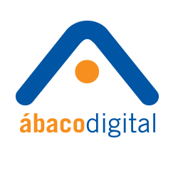

Teléfono
(55) 5424-0620
Teléfono
(55) 5424-0620
Acerca de Ábaco
Diseñadores de estrategias de marketing online, se enfocan en los objetivos de negocio, buscan la integración online – offline, proponemos las acciones a emprender y planteamos claramente cómo medir los resultados desde un inicio.
|  |
Abaco Digital Atraer, convertir y retener clientes es clave para cumplir los objetivos de tu negocio.
Apasionados en conocer a fondo a sus clientes, su entorno competitivo, sus audiencias estratégicas y, en general,
el ecosistema de negocios del que forman parte. |
|
Ábaco Metrics Especialistas en servicios de Consultoría Digital Analytics para apoyar estratégicamente la toma de
decisiones de marketing digital y optimizar los resultados de negocio de nuestros clientes. |
Certificaciones de Ábaco